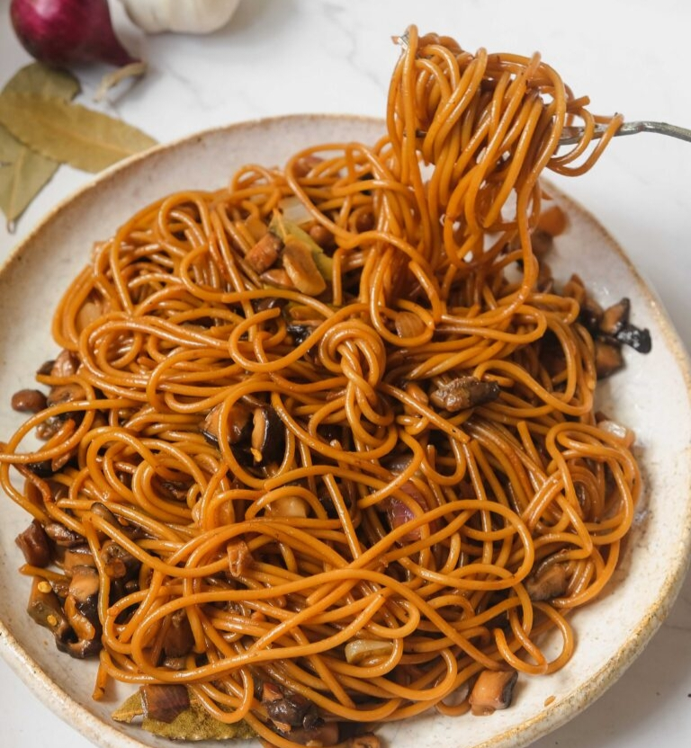
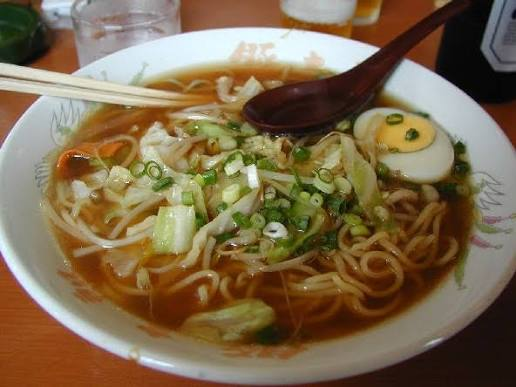
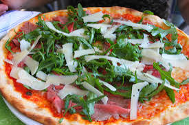

International & Fusion Cuisine
Tarlac’s growing culinary scene includes a mix of international restaurants and creative fusion spots that blend global flavors with local Tarlac ingredients. Whether you’re craving Italian pasta, Japanese ramen, or a unique dish that combines Filipino and foreign techniques, you’ll find something exciting to try across the province.
Featured International & Fusion Dishes
-

Adobo Pasta -

Tarlac-Style Ramen -

Farm-to-Table Pizza
About These Global & Creative Dishes
- Adobo Pasta: A popular fusion dish that combines classic Italian pasta with Tarlac’s beloved adobo flavors – pasta is tossed in a sauce made from adobo braising liquid, garlic, and local olive oil, topped with grilled chicken or pork and fresh herbs from local farms.
- Tarlac-Style Ramen: Japanese ramen with a Filipino twist – the broth uses pork bones slow-cooked with local ginger and turmeric, while noodles are topped with lechon kawali, pickled green mangoes, and a soft-boiled egg seasoned with native soy sauce.
- Farm-to-Table Pizza: Italian-style pizza with a thin crust, topped with fresh vegetables from Tarlac farms (like bell peppers, tomatoes, and mushrooms), locally made mozzarella, and unique toppings like grilled longganisa or calamansi-infused sauce.
- Thai-Filipino Green Curry: Combines Thai green curry paste with coconut milk from Tarlac’s coconut farms, mixed with local vegetables and chicken or pork – served with jasmine rice grown in the province’s rice fields.
- American-Style Burger with a Twist: Juicy beef patties made from local grass-fed cattle, topped with homemade atchara (pickled papaya), melted cheese, and a special sauce made from calamansi and banana ketchup.
Where to Find International & Fusion Food
- The Fusion Table (Luisita Estate): Specializes in creative fusion dishes that blend global techniques with Tarlac ingredients – their adobo pasta and farm-to-table pizza are must-tries.
- Kaito Ramen House (Tarlac City): Serves authentic Japanese ramen with local twists, using ingredients sourced from nearby farms – popular with both locals and foreign visitors.
- La Tavola Italian Restaurant (Concepcion): Offers classic Italian dishes like pasta and pizza, all made with fresh Tarlac produce – their tomato sauce uses sun-ripened tomatoes from local farms.
- Burger Barn Tarlac (Capas): Serves American-style burgers with Filipino toppings, perfect for travelers looking for a familiar meal with a local touch.
- Thai-Ga Pinoy Cafe (Camiling): Blends Thai and Filipino flavors – their green curry with local vegetables is a customer favorite.
The Rise of International & Fusion Food in Tarlac
- Growing Tourism & Diversity: As Tarlac welcomes more visitors from around the world, restaurants have expanded their menus to offer global flavors alongside local dishes.
- Creative Chefs: Many local chefs have trained abroad or learned international techniques, bringing new ideas while staying committed to using Tarlac’s fresh ingredients.
- Appeal to All Ages: These restaurants attract both younger locals looking for new tastes and families wanting to enjoy a mix of familiar and exciting dishes.
- Support for Local Farms: Even international restaurants prioritize using Tarlac-grown produce, helping to support the province’s agricultural community.